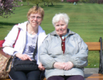

<!DOCTYPE html>
<html lang="en">
<head>
    <meta charset="UTF-8">
    <meta name="viewport" content="width=device-width, initial-scale=1.0">
    <meta http-equiv="X-UA-Compatible" content="ie=edge">
    <link rel="stylesheet" href="css/style.css">
    <link href="https://fonts.googleapis.com/css?family=Open+Sans:400,700" rel="stylesheet"> 
    <title>Document</title>
</head>
<body>
    <footer>
        <div class="container-footer-top">
            <div class="presse">
                <h4>PRESSE</h4>
                <div class="presse-gauche">
                    <p><a href="#">Schaerbeek Info<br> du 26.02.2018 </a></p>
                    <p><a href="#">Schaerbeek Info<br> du 25.09.2017 </a></p>
                    <p><a href="#">Schaerbeek Info<br> du 17.02.2014 </a></p>
                    <p><a href="#">Schaerbeek Info<br> du 18.11.2013 </a></p>
                </div>
                <div class="presse-droite">
                    <p><a href="#">Schaerbeek Info<br> du 18.02.2013 </a></p>
                    <p><a href="#">Schaerbeek Info<br> du 12.03.2012 </a></p>
                    <p><a href="#">Schaerbeek Info<br> du 17.01.2011 </a></p>
                    <p><a href="#">Schaerbeek Info<br> du 11.04.2010 </a></p>
                </div>
            </div>
            <div class="liens">
                <h4>LIENS</h4> <br>
                <p><a href="#">Commune de Schaerbeek</a></p>
                <p><a href="#">Guide de l'accompagnant<br> social schaerbeekois</a></p>
                <p><a href="#">CPAS de Schaerbeek</a></p>
            </div>
            <div class="acces">
                <h4>ACCES</h4> <br>
                <p>Chaussée de Haecht<br> 226 à 1030<br> Schaerbeek<br> <br> 02/240.30.60<br><br>
                <a href="#">Plan</a>
            </div>
            <div class="temoignages">
                <h4>TEMOIGNAGES</h4>
                <br>
                <a href="#">Témoignage sur le métier <br> de l'aide familiale</a><br><br>
                <br>
                <a href="#">Le petit mot de <br> la Présidente de l'asbl</a>
            </div>
        </div>
        <div class="container-footer-bottom">
            <div class="copy">
                <p>Site créé par "Nom, Nom et Nom". Organisme agréé par la Communauté Française n°0059.</p>
                <p>Tout droit réservé - Aide aux Familles de Schaerbeek a.s.b.l - ©2007.</p>
                <p>Dernière mise à jour : 07/06/2018.</p>
            </div>
        </div>
    </footer> 
</body>
</html>

